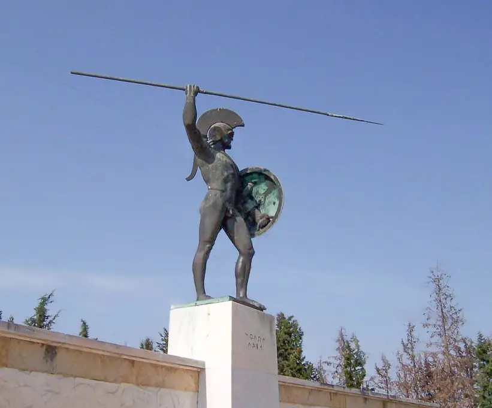

Battle of Thermopylae (c. 480 BCE)

The Battle of Thermopylae took place in 480 BCE during the Greco-Persian Wars. It was fought at a narrow mountain pass in central Greece, where a Greek army led by the Spartan king Leonidas attempted to stop the Persian forces of King Xerxes I from advancing south. Although the Greeks defended the pass successfully for two days, they were eventually betrayed and defeated on the third day.
The conflict began with earlier tensions between Greece and Persia. In 491 BCE, the Persian king Darius I had sent messengers to Greek city-states demanding that they accept Persian authority. Athens and Sparta rejected this demand, showing their determination to remain independent. After Darius's death, his son Xerxes continued his father's plans and invaded Greece in 480 BCE. While several Greek city-states submitted to Persia or stayed neutral, Athens and Sparta joined other Greek communities in organising resistance.
Xerxes advanced into Greece with a large army, supported by a powerful fleet travelling along the coast. The Greeks decided to defend the narrow pass of Thermopylae while their navy confronted the Persian fleet near Artemisium. Leonidas commanded a force that included his famous 300 Spartan warriors, alongside soldiers from other Greek city-states. Estimates of the total forces vary, but the Persian army was considerably larger. The narrow terrain was an advantage for the Greeks because it prevented the Persians from using their numerical superiority effectively.
For two days, the Greeks resisted repeated Persian attacks and inflicted heavy losses on their opponents. However, a Greek man named Ephialtes revealed a hidden mountain path to Xerxes, allowing Persian soldiers to move around the Greek defensive position. Once Leonidas learned that the Persians were approaching from behind, he realised that his army was in danger of being surrounded. Most of the Greek forces withdrew, while Leonidas remained with his 300 Spartans and other soldiers, including groups from Thespiae and Thebes. They continued fighting until they were overwhelmed, and Leonidas was killed.
The Persian victory opened the route into southern Greece, allowing Xerxes to continue his invasion. Nevertheless, Thermopylae became a powerful symbol of courage, sacrifice, and resistance against a much larger enemy. The Greeks later honoured the fallen soldiers with memorials, including a stone lion associated with Leonidas. A statue of the Spartan king was also erected at Thermopylae in modern times.
The battle has remained famous throughout history because of the determination shown by the Greek defenders despite the overwhelming odds against them. It has inspired books, films, and other works of popular culture, including the film 300, released in 2006. Although the Greeks lost the battle, their resistance became an important part of the story of the Greco-Persian Wars.